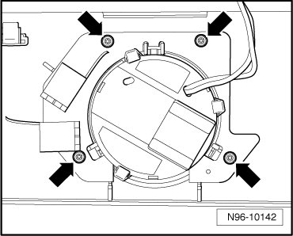

Sunroof Switch Illumination
Roof Trim Lamps and Switches
Sunroof Switch Illumination
Removing
- Remove Sunroof switch (E8) --> [ Sunroof Switch ]. Sunroof Switch
- Remove mounting bolts - arrows - and remove Sunroof Switch Lamp (L65) from trim.

Installing
Install in reverse order of removal.